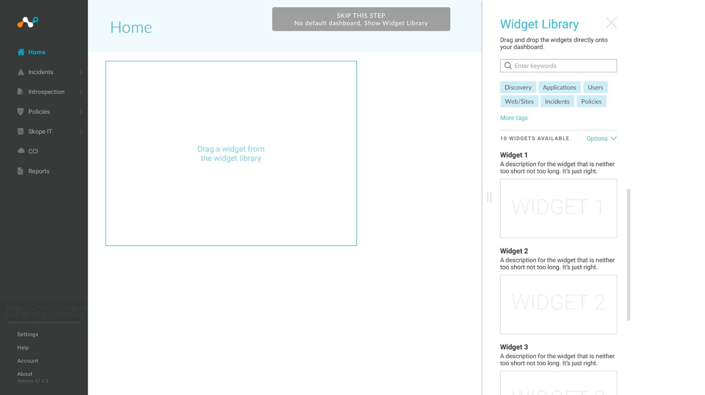
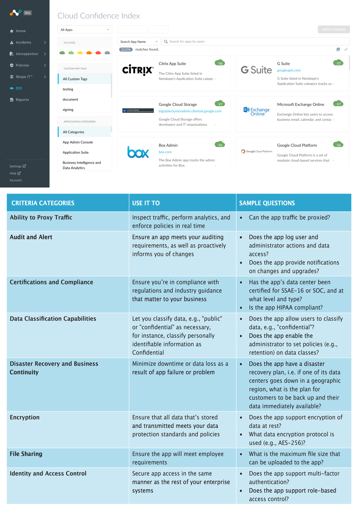
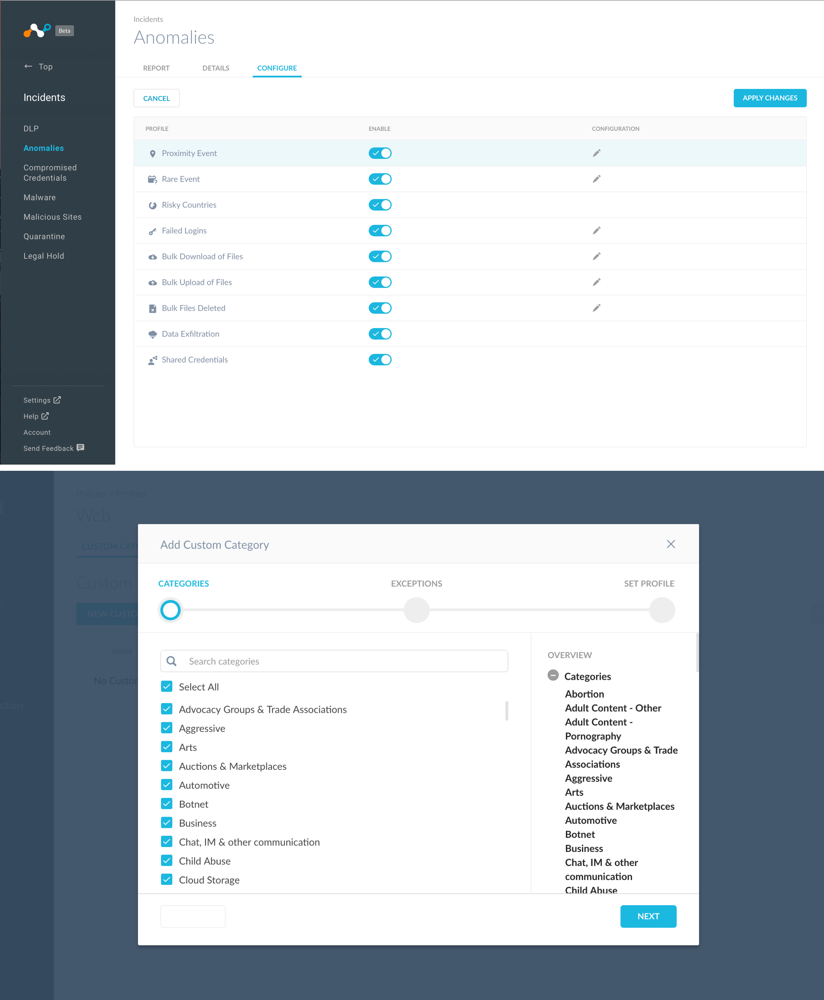
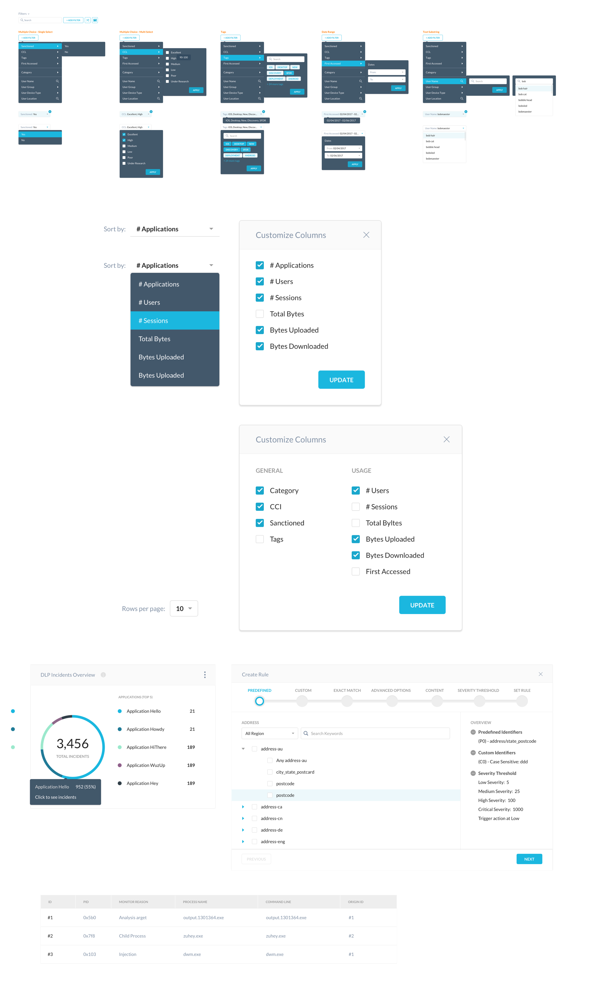
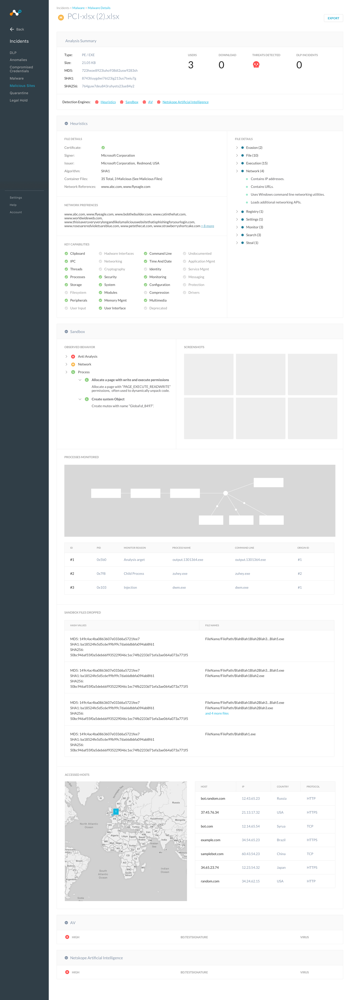
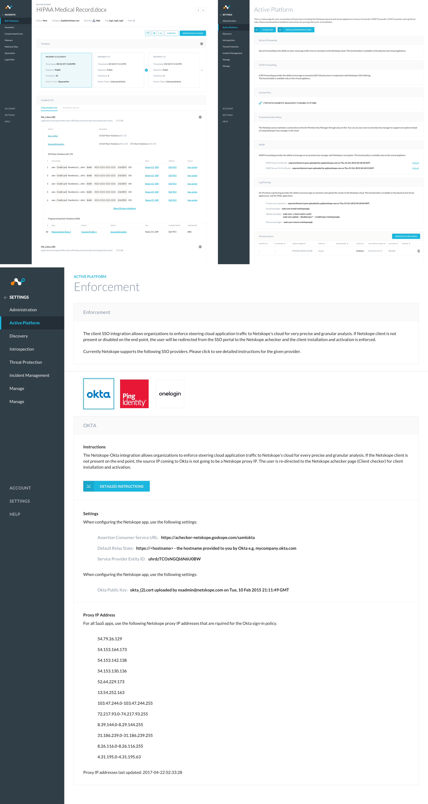

Netskope - Data Dashboard
Design Overview : Designing with Data
Designing with Data can be a huge challenge, especially if there is a large number of users
that is involved in a lot of activity. How can we effectively monitor our users to make sure
what they are doing is safe for the work environment. Are we sharing the right files and is it
infecting our system? We need to look at all the ways users interact within the organization by
how they are handling their data, whether its sharing, downloading, viewing, or transferring data
over the cloud. By looks at each activity and find common patterns, administrators and users who
oversee the organization can get a better grasp on how to identify the problem.
The goal of the project
To create a Dashboard where users can view overall data based on user activity.
Who is the client?
• Third party stakeholders and the employees within the organization.
What I'm trying to solve
• Create a cohesive Dashboard so the administrator can see all activities
• Quickly view incident by look at data module
• Give users the option to customize their data priority
• Have a simple easy to understand graph for quantitative information.
Defining the Problem
• The main problem I will be addressing is lack of security and potential risks.
• What are the user needs based on my organization?
• How much data do I need to translate?
• What are the categories thats involved when downloading data?
• How safe is it to use this service over the cloud?
• Is it safe for my organization to continue to use this service?
Main Dashboard
In the main dashboard, the person can get a clear overview on each category and see the data quickly form a glance.
The data and numbers help give the individual a clear estimate on the overall activities of the organization in terms
of DLP violations, sites visited, files downloaded, and identifying users and groups with certain activity. I use the
massive data I gathered and tried to simplify the data in a way thats easy to understand.
Users are able to experiment and try out different graphs either within launching or opening the widget library. The UI library gives users the customizability in how they want to see their data. Do they prefer a bar graph or circle? Maybe they just want to view specific users and numbers. By picking a graph, users are able to customize and input the data that is important them to view. They can also save different dashboard sessions by making new tabs for specific audiences the like to view.
 Research Questions for the appTo understand how does the overall dashboard functions, we need to understamd certain categories and questions. What does the app do and what is its capability? I feel answering those questions and researching further into data loss and protection will give me a better insight in understanding which information is important for users.
 Configure SettingsThis customization helps users to report which problems users come across and you can easily switch on and off if you want to enable certain actions on your users. Enabling the switch helps monitor how users are interacting with the organization over the cloud.
 Filtering UI PatternsThe filtering patterns helps to easy filter by specific activity, so if there is something you don’t see on the keyboard. You can use the filter ui to narrow your findings on the data you are looking for.
 Detailed Page for IncidentsIts great when you are able to see the overall view of information. But sometimes, we need to dive deeper after we look at the general overall data. Which file is infecting and causing problems for users over the cloud? Where did it come from and whats the source? By homing into the exact problem, we are able to see what viruses capabilities are, the users infected, and location it come from. Knowing as much information on a particular incidents gives our users the ability to focus on several areas of the problem.
  ReflectionsIt was a huge challenge working with a huge amount of data from users of many different companies. Who have to look at the different behaviors and personality of each group cause not everyone is the same. Each administrator deals with their own set of challenges, so providing data in a way thats quick at a glace and giving them the information they need most empowers them to do their jobs better. Designing the graph along with the settings to filter out incidents has been a complex problem. After doing more user research and testing, I slowly figure out the trends in what the stakeholders were looking for in terms of information when viewing the graph.